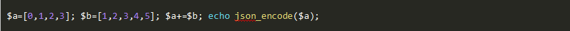

一、单选题（共10题，每题5分）
1.以下代码输出的结果是？

A、[0,1,2,3]
B、[1,3,5,7,5]
C、[1,2,3,4,5]
D、[0,1,2,3,5]
参考答案：D
答案解析：
考的是数组+和array_merge的区别 当下标为数值时，array_merge()不会覆盖掉原来的值，但array＋array合并数组则会把最先出现的值作为最终结果返回，而把后面的数组拥有相同键名的那些值“抛弃”掉（不是覆盖）. 当下标为字符时，array＋array仍然把最先出现的值作为最终结果返回，而把后面的数组拥有相同键名的那些值“抛弃”掉，但array_merge()此时会覆盖掉前面相同键名的值.
2.以下代码执行结果是？
B、1
C、2
D、3
参考答案：B
答案解析：
如果你回答 2 ，恭喜，你掉入陷阱了。 其实这道题主要考两点，第一点是static静态类型。这种的值永远都是静态的，第一次调用声明等于0，并且自增等于1。第二次调用，1再自增就等于2。但其实这里还有一道陷阱，那就是++a与a++的区别，前++是先自增，后++是先返回值再自增，所以结果等于 1。
3.以下PHP代码执行的结果是？
B、[1,2,2]
C、[1,1,2]
D、[1,3,2]
参考答案：B
答案解析：
在 PHP 中，foreach 结束后，循环中的索引值（index）及內容（value）並不会被重置。 所以最后的 $v还指向最后一个元素，再次循环，就会把最后个元素的值修改掉了。
解决的办法是，循环完毕之后，用unset($v); https://www.php.net/manual/en/control-structures.foreach.php
4.php执行过程的顺序正确的是？
A、扫描->解析->编译->执行->输出
B、扫描->解析->执行->编译->输出
C、扫描->编译->解析->执行->输出
D、扫描->执行->编译->解析->输出
参考答案：A
答案解析：
PHP简化执行过程： 1.扫描(scanning) ,将index.php内容变成一个个语言片段(token) 2.解析(parsing) , 将一个个语言片段变成有意义的表达式 3.编译(complication),将表达式编译成中间码(opcode) 4.执行(execution),将中间码一条一条的执行 5.输出(output buffer),将要输出的内容输出到缓冲区
5.php垃圾回收机制的说法错误的是？
A、在一个垃圾周期中，通过检查引用计数是否减1，并且检查哪些变量容器的引用次数是零，来发现哪部分是垃圾
B、可以通过调用gc_enable() 和 gc_disable()函数来打开和关闭垃圾回收机制
C、通过清理未被使用的变量来节省内存的占用
D、php代码执行完毕后会自动执行垃圾回收，所以不需要手动执行垃圾回收
参考答案：D
答案解析：
php一段代码有可能要长时间执行，但若此期间有未引用的变量的话，就会占用内存的空间，导致运行缓慢等问题
6.关于XSS防御，错误的是？
A、禁止字符
B、限制字符(reg_match)
C、过滤(preg_replace)
D、转义标签(htmlspecialchars)
参考答案：A
答案解析：
转义标签(htmlspecialchars) 限制字符(reg\_match) 过滤(preg\_replace) http only 模板引擎
7.有一个文件ip.txt，每行一条ip记录，共若干行，下面哪个命令可以实现“统计出现次数最多的前3个ip及其次数”？（ ）
A、uniq -c ip.txt
B、sort -nr ip.txt | uniq -c | sort -nr | head -n 3
C、cat ip.txt | count -n | sort -rn | head -n 3
D、cat ip.txt | count -n
参考答案：B
答案解析：
本题利用管道符"|"组合多个命令，uniq -c filename用于去除冗余并统计每一行出现的次数。 sort -r指逆序排序，-n指按数字字符串大小排序 head指定数量。 剩下的二选一交给运气。
正确的命令应该为： sort -nr ip.txt | uniq -c | sort -nr | head -n 3 第一次排序，把ip按顺序排列，因为第二个uniq只会合并相邻项 第二次排序，才是把ip按出现次序大小从大到小排列 最后取前三项结果。
8.Mysql索引使用的B-Tree描述错误的是？
A、每个非叶子结点由n-1个key和n个指针组成，其中d<=n<=2d；
B、每个叶子结点至少包含一个key和两个指针
C、所有叶结点都在同一层，深度等于树高h.
D、一个结点中的key从左至右递减排列
参考答案：D
答案解析：
B-Tree是满足条件： d>=2，即B-Tree的度； h为B-Tree的高； 每个非叶子结点由n-1个key和n个指针组成，其中d
9.下列哪个是创建一个每周三01:00~04:00每3分钟执行执行一次的crontab指令？
A、* 1,4 * * 3 /bin/bash /home/sijiaomao/ok.sh
B、*/3 1,4 * * 3 /bin/bash /home/sijiaomao/ok.sh
C、*/3 1-4 * * 3 /bin/bash /home/sijiaomao/ok.sh
D、*/3 1-4 * * * /bin/bash /home/sijiaomao/ok.sh
参考答案：C
答案解析：
A：每周三的1时4时每分钟执行一次 B：每周三的1时4时每3分钟执行一次 C：满足要求 D：每天的1时4时每3分钟执行一次
10.正则的引擎表述错误的是？
A、正则引擎主要可以分为两大类：一种是DFA，一种是NFA。
B、一般而论，NFA引擎则搜索更快一些。但是DFA以表达式为主导，更容易操纵，因此一般程序员更偏爱DFA引擎！
C、NFA表达式主导,DFA文本主导.
D、可以使用是否支持忽略优先量词和分组捕获来判断引擎类型：支持 NFA,不支持 DFA
很多人在刚接触这个行业的时候或者是在遇到瓶颈期的时候，总会遇到一些问题，比如学了一段时间感觉没有方向感，不知道该从那里入手去学习，对此我整理了一些资料，需要的可以免费分享给大家（11年架构师带你解读年薪50万面试通关秘籍。）
如果喜欢我的文章，想与一群资深开发者一起交流学习的话，获取更多相关大厂面试咨询和指导，欢迎加入我的学习交流群点击此处PHP高级交流
二、多选题（共10题，每题5分）
1.HTTP中GET与POST的区别有哪些？
A、GET在浏览器回退时是无害的，而POST会再次提交请求
B、GET请求只能进行url编码，而POST支持多种编码方式
C、GET请求会被浏览器主动cache，而POST不会，除非手动设置。
D、GET产生一个TCP数据包，POST产生两个TCP数据包。
2.MySQL有一个复合索引：INDEX(`a`, `b`, `c`)，以下查询能用上索引的有？
A、select * from users where a = 1 and b = 2
B、select * from users where b = 2 and a = 1
C、select * from users where a = 2 and c = 1
D、select * from users where b = 2 and c = 1
3.为什么大型网站要使用消息队列？
A、解耦
B、异步
C、削峰
D、大数据处理
。
4.关于Memcache与Redis的说法正确的有？
A、Memcache单个key（变量）存放的数据有2M的限制, Redis单个key（变量）存放的数据有1GB的限制
B、Memcache存储数据的类型都是String类型，Redis数据类型比较丰富:String、List、Set、Sortedset、Hash
C、Memcache可以使用多核（多线程），而Redis只是支持单线程
D、Memcache服务器突然断电，则全部数据就会丢失； 而Redis有持久化功能，可以把数据随时存储在磁盘上
5关于缓存雪崩的事前事中事后的解决方案正确的有？
A、事前：进行系统压力测试，在负载均衡层做限流处理，过载丢弃请求或者进入队列
B、事前：redis 高可用，主从+哨兵，redis cluster，避免全盘崩溃。
C、事中：本地 ehcache 缓存 + hystrix 限流&降级，避免 MySQL 被打死。
D、事后：redis 持久化，一旦重启，自动从磁盘上加载数据，快速恢复缓存数据。
6.设计一个高并发系统，需要重点考虑的问题有？
A、系统拆分
B、缓存
C、MQ
D、分库分表
E、读写分离
F、ElasticSearch
7.关于PHP-FPM子进程数量说法正确的有？
A、PHP-FPM 子进程数量不能太多，太多了增加进程管理的开销以及上下文切换的开销
B、dynamic 方式下，最合适的子进程数量为 在 N + 20% 和 M / m 之间 （N 是 CPU 内核数量，M 是 PHP 能利用的内存数量，m 是每个 PHP 进程平均使用的内存数量）
C、static方式：M / (m * 1.2) （M 是 PHP 能利用的内存数量，m 是每个 PHP 进程平均使用的内存数量）
D、pm.max_requests 可以随便设置 ,但是为了预防内存泄漏的风险，还是设置一个合理的数比较好
8.关于Kafka、ActiveMQ、RabbitMQ、RocketMQ说法正确的有？
A、ActiveMQ 基于 erlang 开发，并发能力很强，性能极好，延时很低
B、RocketMQ topic 可以达到几百/几千的级别，吞吐量会有较小幅度的下降，在同等机器下，可以支撑大量的 topic
C、RabbitMQ时效性是微秒级，这是 RabbitMQ 的一大特点，延迟最低
D、Kafka 单机吞吐量 10 万级，高吞吐，一般配合大数据类的系统来进行实时数据计算、日志采集等场景
9.分库分表之后，id 主键如何处理？
A、单库生成自增 id
B、设置数据库 sequence 或者表自增字段步长
C、UUID
D、snowflake 算法
10.Redis 内存淘汰机制有哪些？
A、noeviction: 当内存不足以容纳新写入数据时，新写入操作会报错
B、allkeys-lru：当内存不足以容纳新写入数据时，在键空间中，移除最近最少使用的 key
C、volatile-lru：当内存不足以容纳新写入数据时，在设置了过期时间的键空间中，移除最近最少使用的 key
D、allkeys-random：当内存不足以容纳新写入数据时，在设置了过期时间的键空间中，随机移除某个 key。